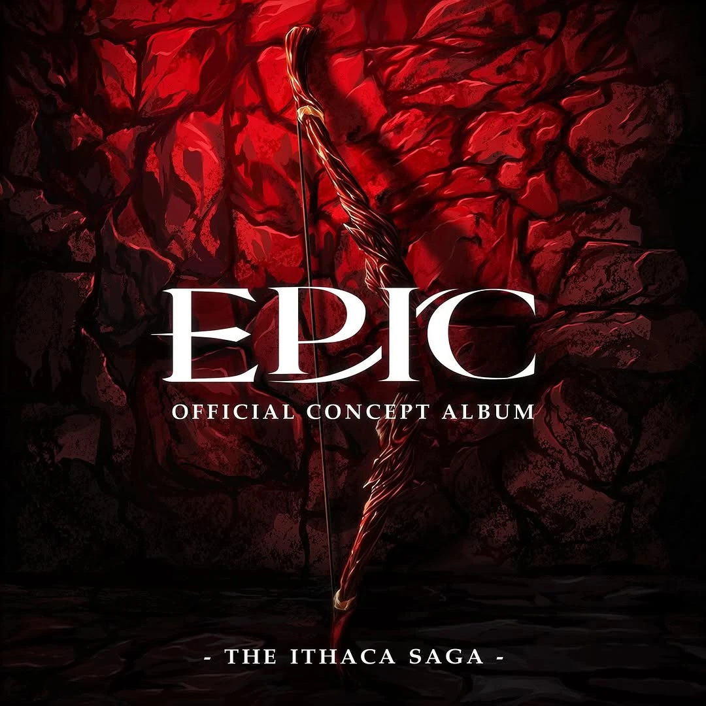

À Ithaque, Pénélope aperçoit la tempête de Poséidon au loin, et l'interprète comme un signe que sa vie va bientôt changer. Elle lance un défi presque impossible aux prétendants, promettant d'épouser celui qui pourra tendre le vieil arc d'Ulysse et tirer une flèche à travers douze têtes de hache (The Challenge).
Après avoir échoué au défi et compris que Pénélope n'a pas l'intention de les laisser prendre le pouvoir ou d'épouser l'un d'entre eux, Antinoos rassemble les prétendants pour assassiner Télémaque et violer Pénélope, mais une flèche le tue soudainement (Hold Them Down).
Les prétendants découvrent que l'archer est Ulysse, qui vient de rentrer chez lui et découvre furieux les agissements passées et le plan des prétendants. Ulysse attaque rapidement le reste de leur groupe et les massacre un à un dans le palais ignorant leurs appels à la pitié. Télémaque également de retour à Ithaque après une visite diplomatique, rejoint la bataille, mais il est rapidement submergé par le nombre de prétendants. Ulysse vient à son secours et tue les derniers intrus (Odysseus).
Après la bataille, Télémaque et Ulysse se rencontrent pour la première fois depuis vingt ans et partagent d'émouvantes retrouvailles. Alors que Télémaque part chercher Pénélope, Athéna apparaît à Ulysse et s'interroge sur un monde plus pacifique, mais Ulysse lui répond qu'il ne vivra pas pour voir un tel monde. Leurs points de vue sur le monde se sont inversé depuis leur dernière rencontre ("My Goodbye") : Ulysse a embrassé l’impitoyabilité, tandis que Athéna prône l’altruisme (I Can't Help but Wonder).
Ulysse retrouve enfin Pénélope, ému il lui fait part des épreuves qu'il a traversé pour la rejoindre, et lui confie qu'il ne pense plus être l'homme dont elle était tombée amoureuse. Pénélope lui demande de déplacer leur lit de noces, ce à quoi Ulysse répond que c'est impossible car le lit est sculpté dans un olivier enraciné, là où ils se sont rencontrés pour la première fois. Comme seul Ulysse connait cette particularité, Pénélope déclare qu'il est toujours l'homme qu'elle a épousé, et tous deux se déclarent leur amour (Would You Fall in Love with Me Again).